flex-* components) and the Partner Center portal (different header, footer, navigation, and form system). The training section redirects to an external domain (skilling-hub.com). Migration scope should focus on the marketing content site only.
The partner.microsoft.com site is built on Sitecore CMS with a rich integration ecosystem including Tealium tag management, Microsoft Clarity analytics, Sitecore CDP personalization, and Azure Application Insights monitoring. The marketing content site uses a modular component system with flex-* prefixed components and a Bootstrap-based grid layout.
Of the ~400 in-scope pages, approximately 350 are blog articles suitable for automated bulk import, while ~40 marketing/landing pages will require individual manual migration with custom block development.
| # | Template Name | Complexity | Description | Reference URL |
|---|---|---|---|---|
| 1 | Homepage | High | Rich marketing page with notification banner, hero with CTA, card grid, step-by-step feed, tabbed content switcher (dark theme), CTA banner, social/share bar. | partner.microsoft.com/en-US/ |
| 2 | Marketing Landing Page | Med-High | Reusable template for partnership/program pages. Hero with image, body text, card sections, CTA callouts, social bar. Uses flex-hero-v2, flex-card-container, feed-unit components. |
partnership, solutions/azure |
| 3 | Comparison / Program Page | High | Notification banner, intro section, image+text cards, interactive tabs with comparison tables, pricing cards, feature benefit cards, footnotes section. | partnership/compare-programs, partnership/marketplace |
| 4 | Blog Listing Page | High | Featured hero article, secondary featured cards (2-up), tile/list view toggle, category filtering, search, sort dropdown, pagination (44+ pages), sidebar with recommended topics & social links. | blog |
| 5 | Blog Article Detail | Medium | Breadcrumbs, article hero with author/date metadata, rich text body with embedded media (YouTube iframes), related articles sidebar, "More from category" section, share/social widgets. | blog/article/* |
| 6 | Support / Form Page | High | Completely different UI framework (Partner Center). Different header/footer, multi-step form wizard, category dropdowns, topic shortcuts. Recommended: Out of scope. | support/?stage=1 |
| 7 | Dashboard / Auth Portal | Very High | Authentication-gated SPA portal. OpenID Connect login, Partner Center dashboard, account management. Entirely different application. Recommended: Out of scope. | dashboard (requires login) |
| 8 | External Training Hub | Out of Scope | Redirects to external domain (skilling-hub.com). Separate React/Vite SPA with different branding, auth, and infrastructure. | training → skilling-hub.com |
| # | Block / Component | Complexity | Description | Screenshot |
|---|---|---|---|---|
| 1 | Global Header / Navigation | High | Microsoft logo, primary nav with 7 top-level items (Partnership, Explore, Connect, Blogs & stories, Skilling, More), mega-menu dropdowns with icons/descriptions/grouped links, search, "Partner Center" link, "Sign in" link. Responsive hamburger menu on mobile. | block-header-nav.png |
| 2 | Notification Banner | Low | Dismissible alert bar with icon, heading, description text, and CTA link. Supports variants: green (success), blue (info). Close button (×) with cookie persistence. Component class: flex-notification. |
block-notification-banner.png |
| 3 | Social / Share Bar | Low | "Follow Us" social media links (Facebook, Twitter, LinkedIn, YouTube), "Was this page helpful?" feedback widget (Yes/No), "Share" links. Blue background variant. | block-social-share.png |
| 4 | Global Footer | Medium | 4-column link grid (Get started, Grow With Us, Resources, Support), locale selector (50+ countries), privacy choices links, legal links (Contact, Privacy, Terms, Trademarks, Code of Conduct), copyright notice. | block-footer.png |
| # | Block / Component | Complexity | Description | Used In |
|---|---|---|---|---|
| 5 | Hero (flex-hero-v2) | Medium | Full-width hero with background image, H1 heading, description, primary CTA button, secondary link. Variants: standard (dark overlay), light text, blue background (bg-blue-style). |
Homepage, Landing Pages |
| 6 | Card Grid (flex-card-container) | Medium | Multi-column card layout (2, 3, or 4 columns). Cards include: image, category badge (colored header), heading, description, CTA link. Variant: flex-card-feature with icon badges. |
Homepage, Landing, Marketplace |
| 7 | Steps / Feed (feed-unit) | Medium | Numbered step-by-step layout with icon, heading, and description per step. Typically 3 steps. Used for onboarding/process flows. | Homepage, Landing |
| 8 | Tabbed Content Switcher | High | Left sidebar tab navigation + right content panel (flex-content-switcher / flex-tabs). Supports dark-blue theme. Panels can contain: text, images, cards, comparison tables, pricing info. |
Homepage, Compare, Marketplace |
| 9 | CTA Banner | Low-Med | Full-width colored background (blue/dark) with heading, description, and CTA button. A variant of the hero component used mid-page as a call-to-action section. | Homepage, Solutions, Compare |
| 10 | Image + Text (side-by-side) | Low-Med | Two-column layout: image on one side, heading + text + CTA on the other. Supports image-left and image-right variants. | Compare, Marketplace, Landing |
| 11 | Icon Feature Cards | Medium | 3-column card layout with icon/illustration at top, heading, description text, CTA link. Used for feature highlights without images. | Marketplace, Compare, Solutions |
| 12 | Success Story Cards | Medium | 3-column grid with image thumbnail, heading, description, CTA link. Image has overlay/hover state. Used for testimonials and case studies. | Marketplace |
| 13 | Resource Cards (bordered) | Medium | 4-column card grid with blue bottom border, heading, description, CTA link. Clean/minimal design for linking to external resources. | Marketplace, Solutions |
| 14 | Pricing / Comparison Cards | High | Side-by-side card layout with heading, feature lists, pricing info, CTA button. Used inside tab panels. Includes footnote superscripts and legal text. | Compare Programs |
| 15 | Blog Featured Hero | Medium | Large featured article card with image, category tag, heading, excerpt, read time, CTA. Used at top of blog listing page. | Blog Listing |
| 16 | Blog Tile / Card | Low-Med | Standard blog listing card with thumbnail image, category tag, title, excerpt, date, read time. Supports tile and list view modes. | Blog Listing |
| 17 | Blog Sidebar | Medium | Sidebar with "Recommended Topics" links and "Follow Us" social links. Sticky-on-scroll behavior. | Blog Listing |
| 18 | Article Body (rich text) | Medium | Rich text content area supporting: headings, paragraphs, inline images, lists, bold/italic, blockquotes, embedded YouTube iframes, and inline links. | Blog Article |
| 19 | Related Articles | Low-Med | "More from [category]" section with 3-column article card grid at bottom of article pages. | Blog Article |
| 20 | Breadcrumbs | Low | Text breadcrumb trail for navigation hierarchy. Used on blog articles and deeper subpages. | Blog Article |
| # | Block / Component | Complexity | Description | Used In |
|---|---|---|---|---|
| 21 | Partner Center Header | High | Completely different header from marketing site. Different logo treatment, navigation structure, user menu. | Support, Dashboard |
| 22 | Multi-Step Form Wizard | Very High | Step indicator, category dropdowns, topic shortcuts, form validation, conditional fields. Used for support ticket creation. | Support |
| 23 | Partner Center Footer | Medium | Different footer layout from marketing site. Reduced link set, different styling. | Support, Dashboard |
| Template | Est. Page Count | Auto-Migratable | Manual Migration | Notes |
|---|---|---|---|---|
| Homepage | 1 | No | 1 | Unique layout, requires custom block development |
| Marketing Landing Pages | ~25–35 | Partial | ~20 | Partnership, Solutions (Azure, M365, Security, etc.), Go-to-market, ISV, CSP, New commerce |
| Comparison / Program Pages | ~8–10 | Partial | ~8 | Compare programs, Marketplace, Solutions Partner. Tabs + comparison tables need manual work. |
| Blog Listing | 1 (+44 paginated) | No | 1 | Single listing template; pagination is dynamic/JS-driven |
| Blog Articles | ~350+ | Yes (bulk) | ~10 for QA | High-volume, consistent structure. ~44 pages × 8 articles. Bulk importable. |
| Support / Form Pages | ~5–8 | No | Out of scope | Different framework (Partner Center). Recommend exclusion or rebuild. |
| Dashboard / Portal | ~50+ | No | Out of scope | Authenticated SPA. Not suitable for EDS migration. |
| Training Hub | N/A | N/A | N/A | External domain (skilling-hub.com). Out of scope. |
| TOTAL (in-scope) | ~390–405 | ~350 | ~40 | Blog articles are bulk-importable; marketing pages need individual attention |
| # | Integration | Type | Complexity | Description |
|---|---|---|---|---|
| 1 | Tealium Tag Manager | Tag Management | High | Primary tag management system (tags.tiqcdn.com/utag/msft/mpartner/prod/utag.js). Orchestrates all analytics tags. Includes Tealium Visitor Service for cross-domain tracking. |
| 2 | Microsoft Clarity | Analytics / Heatmaps | Medium | Session recording and heatmap analytics (scripts.clarity.ms, tag bcxrxdw8j9). |
| 3 | Sitecore CDP / Engage | Personalization | Very High | Real-time personalization engine with A/B testing and targeted content delivery via Sitecore Web Flow libs. Deep CMS integration that drives content variants. |
| 4 | Azure Application Insights | APM / Monitoring | Medium | Application performance monitoring (az416426.vo.msecnd.net + js.monitor.azure.com). Tracks page load times, errors, custom events. |
| 5 | Microsoft Cookie Consent | Privacy / Compliance | Medium | GDPR/CCPA cookie consent banner (wcpstatic.microsoft.com/mscc/lib/v2/wcp-consent.js). Controls other script loading based on consent. |
| 6 | OpenID Connect Auth | Authentication | High | Authentication via /_login?authType=OpenIdConnect. Redirects to Microsoft identity platform. Gates Partner Center, Dashboard, and resources. |
| 7 | Chatbot | Customer Support | Med-High | Custom chat widget (chatBot.js). Likely Azure Bot Service or Power Virtual Agents integration. |
| 8 | Microsoft Survey Broker | Feedback / Survey | Low-Med | Intercept survey/feedback system (microsoft.com/library/svy/partner/broker.js). |
| 9 | Medius Video | Video / Media | Low-Med | Video conversion/player library (medius-video-convert.js). Handles embedded video content. |
| 10 | YouTube Embeds | Video / Media | Low | Standard YouTube iframe embeds in blog articles and marketing pages. |
| 11 | Sitecore CMS | Content Management | Very High | Current CMS platform. Evidenced by CDP.js, /mssc/ asset paths, Sitecore CDP integration. All content structured in Sitecore content trees. |
| 12 | Bootstrap Grid | CSS Framework | Medium | Bootstrap-based responsive grid system (col-md-x-8, col-sm-x-12). Layout dependency across all marketing pages. |
| # | Issue | Severity | Description |
|---|---|---|---|
| 1 | Two Distinct UI Frameworks | Critical | The site runs two completely different applications: (a) Marketing/content pages (Sitecore with flex-* components) and (b) Partner Center portal (different header, footer, nav, form system). The Support page visually and structurally differs from all marketing pages. These cannot share Edge Delivery blocks. |
| 2 | Sitecore CDP Personalization | High | The site uses Sitecore CDP for real-time personalization (A/B tests, targeted content, web flows). Migrating to Edge Delivery Services means losing this personalization layer unless replaced with an equivalent solution (e.g., Adobe Target, AEM Experimentation). |
| 3 | Authentication Gate | High | Multiple sections require OpenID Connect authentication (Dashboard, resources, support). EDS pages are static/CDN-served. Authentication flows need a separate solution (redirect to external auth portal, client-side auth SDK). |
| 4 | Blog Pagination & Dynamic Features | High | Blog listing has 44+ pages with: client-side search, sort dropdown, tile/list view toggle, category filtering. All currently JavaScript-driven. Requires custom EDS block development or external content API integration. |
| 5 | 50+ Locale Variants | High | The site supports 50+ country/language combinations. Each locale variant may have different content, not just translations. This multiplies page count significantly. |
| 6 | Training Redirects Externally | Medium | /training redirects to skilling-hub.com, a completely separate React/Vite SPA. Out of scope for migration, but navigation links must be preserved. |
| 7 | Complex Tab Components | Medium | The flex-content-switcher / flex-tabs component supports multiple content types within panels (text, cards, comparison tables, pricing), dark themes, and interactive state. Requires custom EDS block. |
| 8 | Mega-Menu Navigation | Medium | Primary navigation has 7 top-level items with multi-level mega-menu dropdowns. Significant content in dropdowns (icons, descriptions, grouped links). Requires custom EDS nav block. |
| 9 | Notification Banner System | Low-Med | Dismissible notification banners with close button, cookie persistence. Appears on some pages, not others. |
| 10 | Embedded PDF / Asset Links | Low | Multiple pages link to PDFs and downloadable assets (assetsprod.microsoft.com). External asset references need to be preserved or migrated. |
| 11 | Footnote System | Low | Compare Programs page uses superscript footnotes with numbered references and legal disclaimers at page bottom. Needs proper semantic markup in EDS. |
| Area | Reason for Exclusion |
|---|---|
| Partner Center Dashboard | Authenticated SPA, completely different application architecture |
| Support Ticket System | Different UI framework, form-heavy, requires dedicated backend |
| Training Hub (skilling-hub.com) | External domain, separate React application |
| Authenticated Resources | Content behind login walls, requires auth infrastructure |
| Phase | Scope | Effort (days) | Notes |
|---|---|---|---|
| Design System Migration | Global styles, fonts, colors, spacing, CSS custom properties | 3–5 | Extract from Sitecore CSS, map to EDS design tokens |
| Navigation & Header/Footer | Mega-menu nav, footer with locale selector | 3–5 | Complex mega-menu requires custom EDS block |
| Core Block Development | ~15 unique blocks/variants | 15–25 | Hero, cards, tabs, CTA, steps, notification, social bar, etc. |
| Homepage | 1 page, high complexity | 2–3 | After core blocks are built |
| Marketing Landing Pages | ~30 pages, medium complexity | 10–15 | Mix of automated + manual using shared blocks |
| Blog Listing Template | 1 template + custom JS block | 5–8 | Search, filter, pagination, view toggle functionality |
| Blog Article Template | 1 template, bulk content | 3–5 | Template development + import script authoring |
| Blog Article Content | ~350 articles, bulk import | 3–5 | Automated bulk import with QA sampling |
| Integrations Replacement | Analytics, consent, feedback | 5–8 | Replace Tealium/Clarity/CDP with EDS-compatible equivalents |
| QA & Visual Regression | All templates, responsive breakpoints | 8–12 | Desktop + tablet + mobile testing across all templates |
| Locale Framework | Multi-locale routing setup | 3–5 | URL structure and locale selection mechanism |
| Category | Days | Description |
|---|---|---|
| Automated Migration (blog articles) | 3–5 | Bulk import ~350 blog articles using import scripts |
| Manual Migration (templates + pages) | 40–55 | Block development, templates, marketing pages, navigation |
| Integration Work | 5–8 | Analytics, consent, personalization replacement |
| QA & Testing | 8–12 | Cross-browser, responsive, accessibility, visual regression |
| TOTAL | 56–80 | ~12–16 weeks with a small team (2–3 developers) |
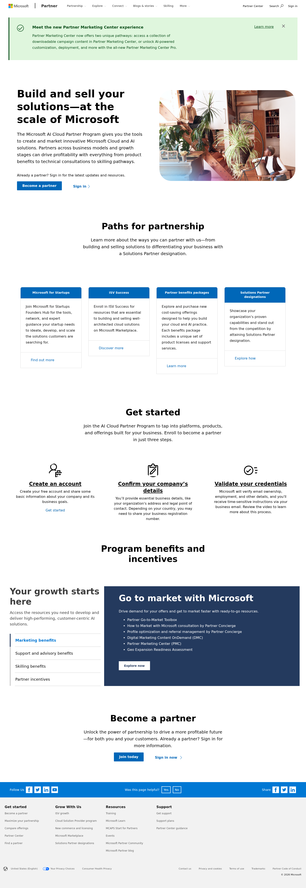
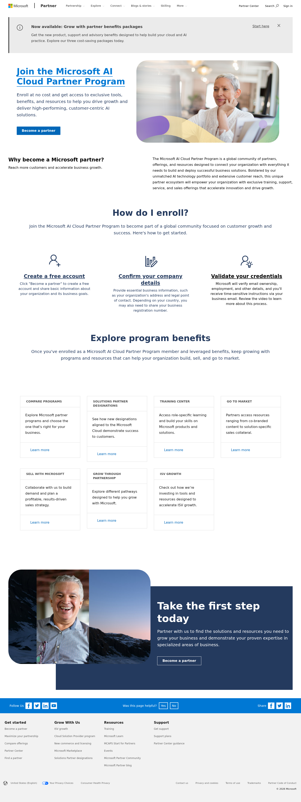
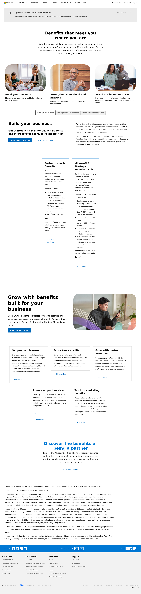
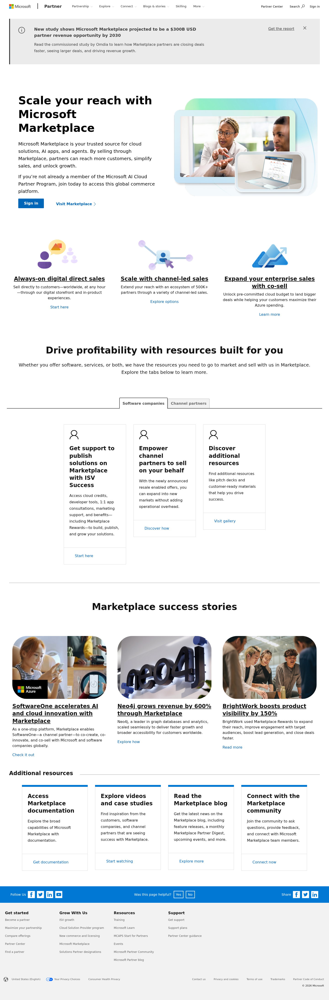
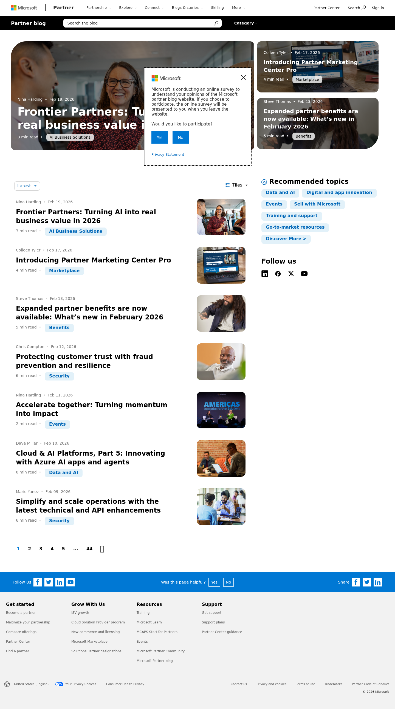
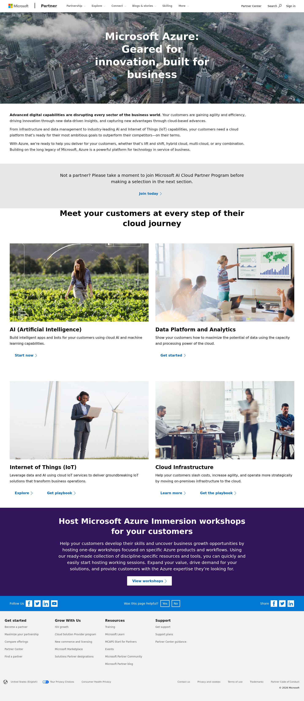
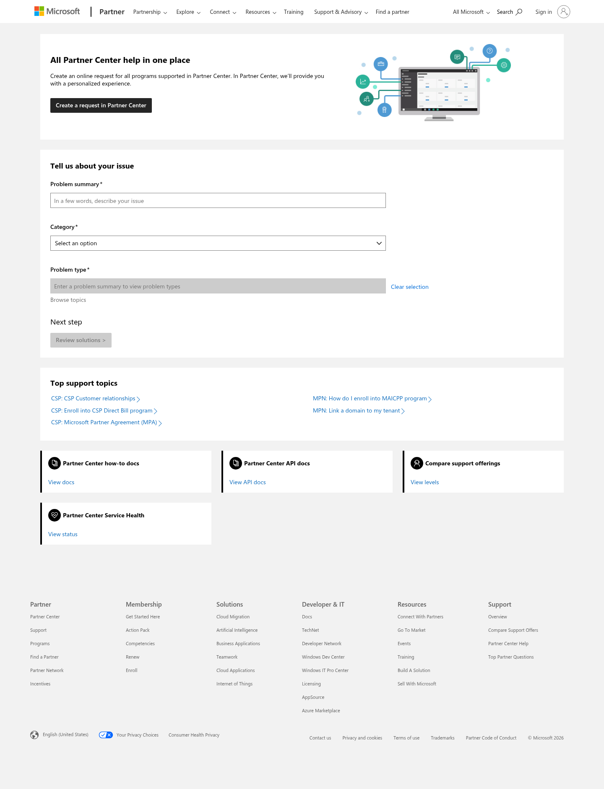
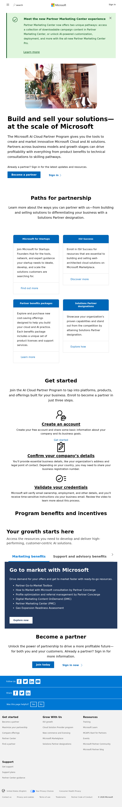
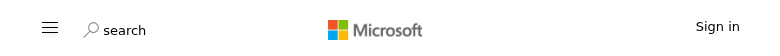
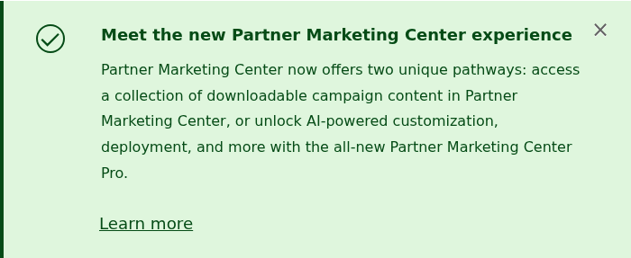
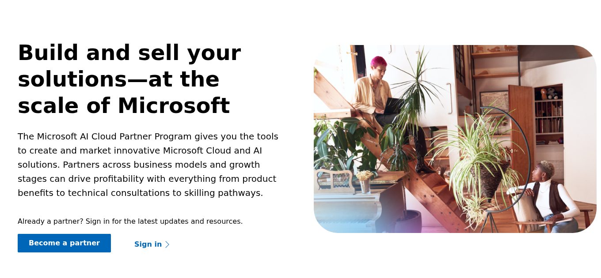
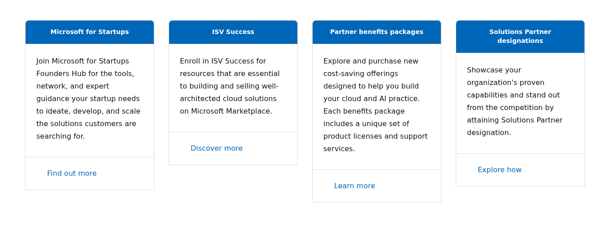
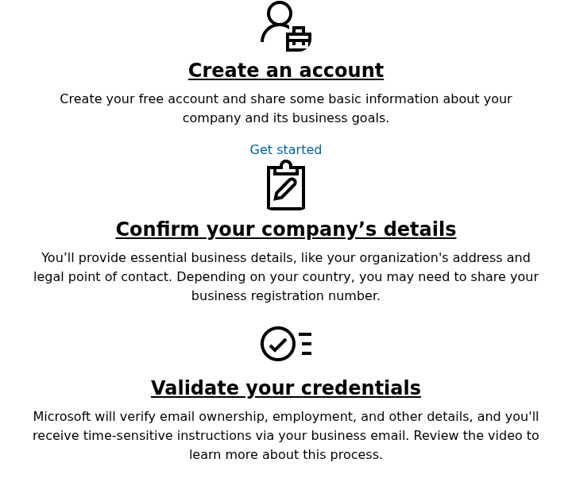
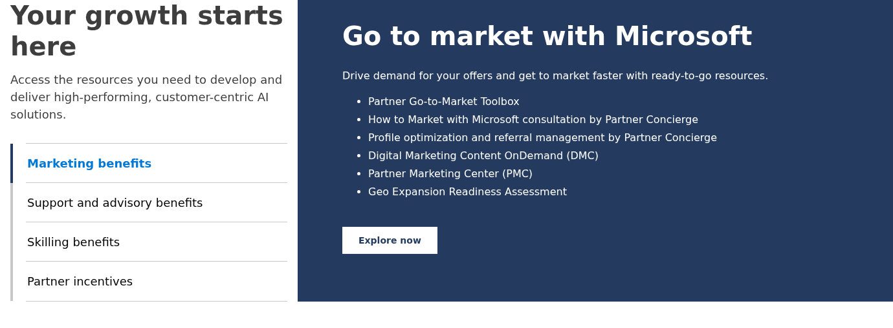
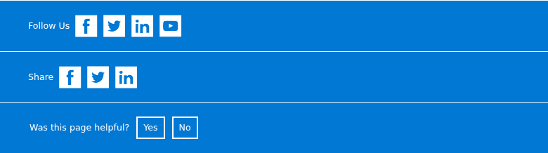
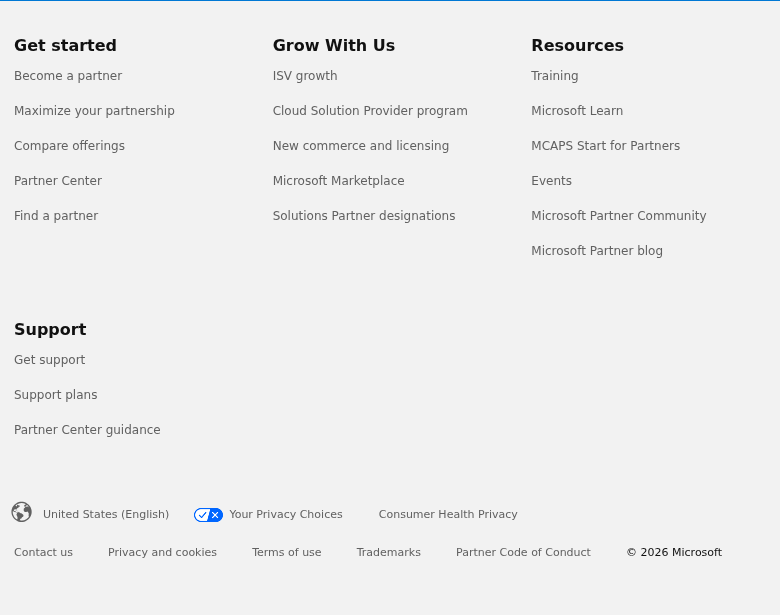